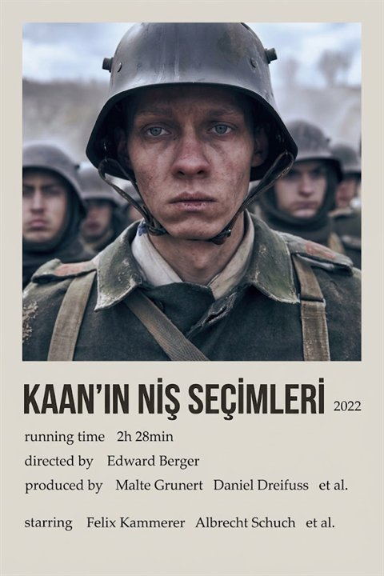

Seçili yılın listesini metin, link veya resim olarak paylaşabilirsin.
Bu liste boş. Arşivdeki kartların üzerindeki "+" düğmesiyle buraya ekleyebilirsin.
Bu sayfa, bir paylaşım linkinden oluşturuldu. Uygulamayı aç
Platform bilgileri JustWatch tarafından sağlanır ve değişebilir.
Yorumlar TMDB kullanıcılarına aittir, çoğu İngilizcedir ve spoiler içerebilir.
Anahtar sadece bu tarayıcıda saklanır, GitHub'a gitmez. Afiş ve bilgileri otomatik getirmek için gerekir.
IMDb puanını göstermek için gerekir. Ücretsiz anahtarı omdbapi.com/apikey.aspx adresinden e-postana alabilirsin.
Kayıtların, listelerin ve favorilerin bu tarayıcıda saklanıyor; tarayıcı verisi silinirse kaybolur. Düzenli yedek al ve telefon ile bilgisayar arasında da bu dosyayla veri taşıyabilirsin. TMDB anahtarın yedeğe girmez.